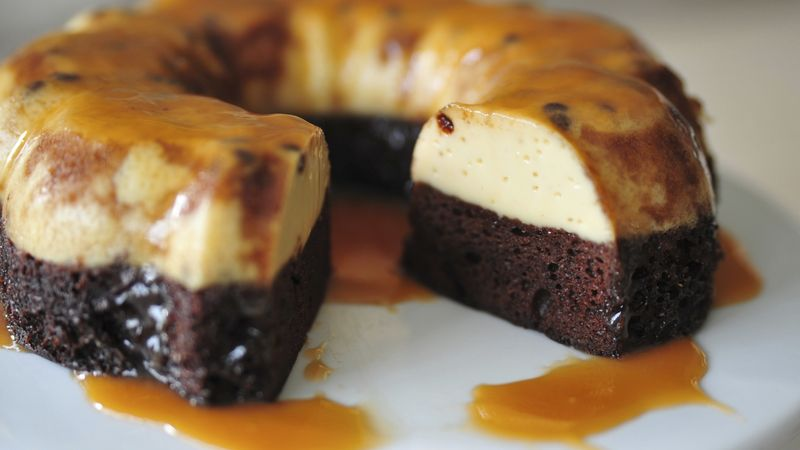

Chocoflan

Description
Chocoflan is a delicious and impressive Mexican cake made with a rich, moist chocolate cake layer on the bottom and a creamy caramel flan on top.
Ingredients
Flan:
- 1 cup cajeta or caramel sauce
- 1 can (12 oz) evaporated milk
- 1 can (14 oz) sweetened condensed milk
- 4 large eggs
- 1 tsp vanilla extract
Cake:
- 1 1/2 cups all-purpose flour
- 1/2 cup unsweetened cocoa powder
- 1 tsp baking soda
- 1 tsp baking powder
- 1/2 cup unsalted butter, softened
- 1 cup granulated sugar
- 2 large eggs
- 1 tsp vanilla extract
- 1 cup buttermilk
Instructions
- Preheat oven to 350 degrees F.
- Prepare the flan: Pour the cajeta into a 10-cup capacity Bundt pan and use a spatula to spread it out.
- In a blender, combine the evaporated milk, sweetened condensed milk, eggs, and vanilla extract. Blend until smooth. Pour into the prepared Bundt pan.
- Prepare the cake: In a medium bowl, sift the flour, cocoa powder, baking soda, and baking powder.
- In a large bowl, cream the butter and sugar together. Add the eggs and vanilla extract and beat until light and fluffy.
- Alternately add the dry ingredients and the buttermilk to the butter mixture, beginning and ending with the dry ingredients. Do not overmix.
- Pour the cake batter over the flan mixture. Cover the Bundt pan with foil and place it in a large roasting pan. Create a water bath by adding enough hot water to the roasting pan to reach halfway up the sides of the Bundt pan.
- Carefully transfer the roasting pan to the oven and bake for 1 hour and 45 minutes or until an inserted toothpick comes out clean.
- Remove the Bundt pan from the water bath and let it cool to room temperature. Refrigerate for at least 4 hours or overnight.
- To unmold, run a knife around the edges of the pan and invert the cake onto a large rimmed platter.
- Serve and enjoy!